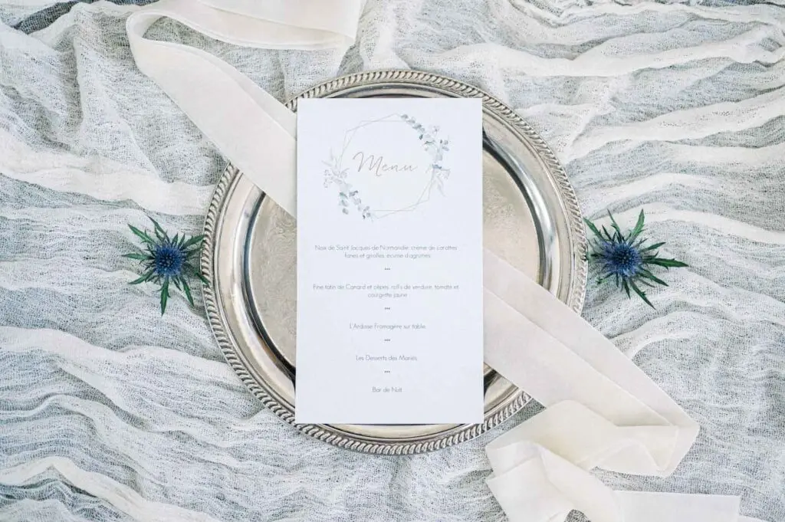
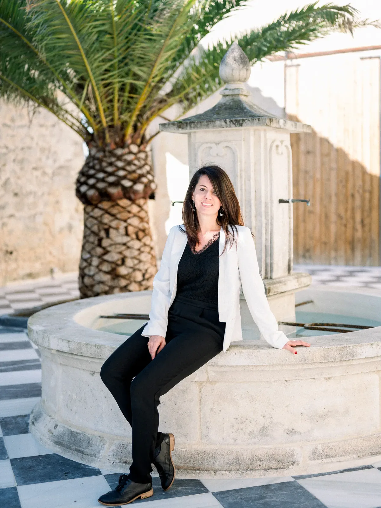
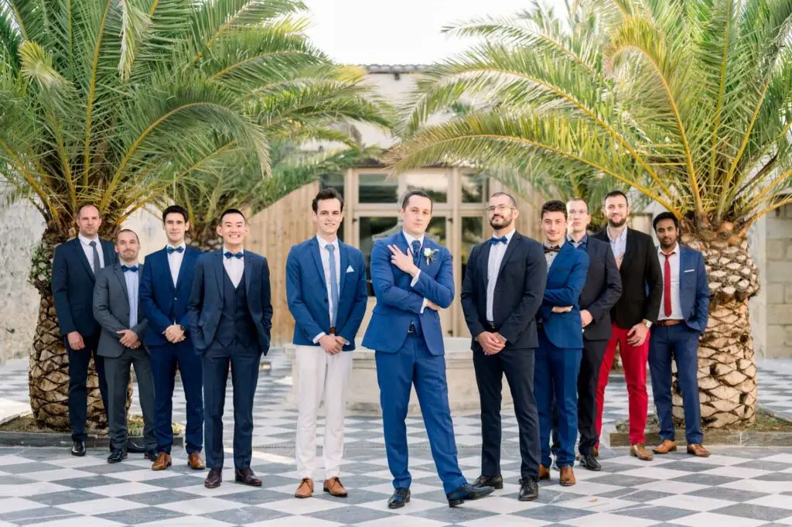
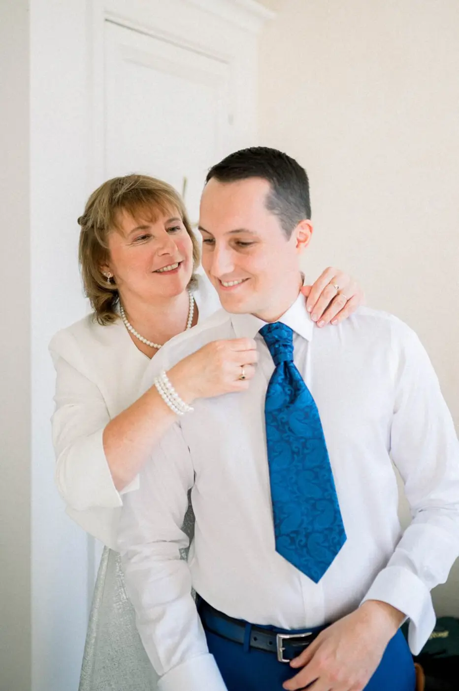
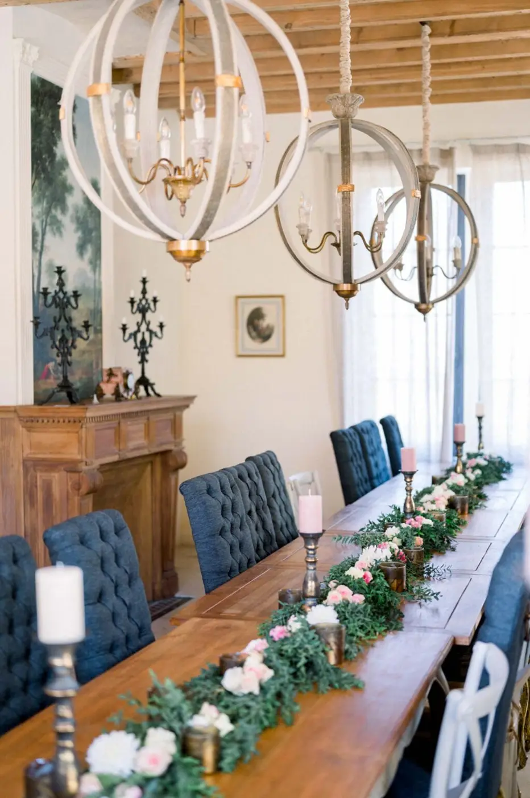

Tristan Perrier
Your wedding is a unique milestone in life, full of emotions you will never forget… So it is worth choosing carefully the person who will preserve its memory.
Let me introduce Tristan Perrier, an editorial wedding photographer based in Bordeaux. It is no coincidence that I chose to introduce him to you: Tristan is a photographer with great human and professional qualities, and we have been working together for many years at weddings in the Bordeaux region and beyond.



His passion? Photography, for as long as he can remember. Tristan is a very sensitive person, deeply attached to human relationships. His motto: communication, sharing and above all kindness. Beyond the images, he offers a personalised experience built on trust, discretion and attention to detail, so that couples feel completely at ease and live their day naturally.
For more than ten years, he has been working with couples in France and abroad, with more than 150 high-end weddings to his name. His approach is rooted in the heritage of fine art photography, enriched by an editorial art direction inspired by the world of luxury and fashion. Masterful natural light, balanced composition, subtle colour, a feel for movement and texture: every image is conceived as an editorial photograph. For Tristan, elegance always takes precedence over excessive staging, and authenticity remains at the heart of his approach.
Tristan and I worked together at the wedding of Marie-Sophie & Sébastien in October 2020. I was the conductor of this incredible day, and he was the photographer of these extraordinary festivities. The wedding took place at Château de Garde, an exceptional venue combining 18th-century architecture with refined interiors: the perfect setting to bring out every detail.

I could talk for hours about Tristan's work and his artistic sensitivity, but a picture is worth a thousand words: I invite you to discover his work directly on his website, tristanperrier.fr, and let yourself be carried away by his world.









Lovely Day Event offers several services
Wedding planning
I step in at every stage of your preparations and guide you through your choices, bringing ideas and suggestions so that your wedding looks like no one but you.
On-the-day coordination
I will be the conductor of your day, managing the suppliers, the set-up of your decor and the smooth running of this beautiful day.
Wedding design
Creative and passionate, I am a certified Wedding Designer and I create a scenographic atmosphere that matches the theme of your wedding. Styling is included in Signature, or offered as an add-on to on-the-day coordination.